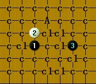

金星刀属于黑必胜刀吗?
#1 金星刀属于黑必胜刀吗? 作者：月光公主 发表时间：2011-7-3 13:35:12
 下棋时无意识的开了金星刀却人被骂开了必胜,本人和师傅研究至今仍无黑必,甚是疑惑,请问哪位老师可以告诉我金星刀到底属不属于黑必胜开局?
下棋时无意识的开了金星刀却人被骂开了必胜,本人和师傅研究至今仍无黑必,甚是疑惑,请问哪位老师可以告诉我金星刀到底属不属于黑必胜开局?［ 静燕思 于 2011-7-24 8:33:48 时花20金币送鲜花一朵］
［ 静燕思 于 2011-7-24 8:33:56 时花20金币送鲜花一朵］
［ 静燕思 于 2011-7-24 8:34:04 时花20金币送鲜花一朵］
#2 Re:金星刀属于黑必胜刀吗? 作者：月光公主 发表时间：2011-7-3 13:36:26
 怎么成了转载的了?是我自己写的呀!OH,MY GOD!
怎么成了转载的了?是我自己写的呀!OH,MY GOD!［ 冥王哈迪斯 于 2011-7-8 17:12:41 时花50金币砸了你一个臭鸡蛋］
#3 Re:金星刀属于黑必胜刀吗? 作者：侯军学棋 发表时间：2011-7-3 13:41:28
一打估计这里的大师都做到地毯了，不过你的对手人品有问题。可能是神经不正常，
#4 Re:金星刀属于黑必胜刀吗? 作者：岑小鱼 发表时间：2011-7-3 13:47:42
虽然不喜欢开妖刀的，但我有点疑问啊---------哪怕是开了蒲月....对手不是可以换么?有么子道理让对方开骂了??#5 Re:金星刀属于黑必胜刀吗? 作者：死劲哭 发表时间：2011-7-3 14:34:19
除‘三手1、2房’其他房间怎么换呀#6 Re:金星刀属于黑必胜刀吗? 作者：死劲哭 发表时间：2011-7-3 14:40:15
=======上图对应的爱五子棋谱代码如下，以便你拆解：========
h8h9k8i9i7
======================================================
在除三手1、2房间，你这样开的话，人家说些难听的话，是可以理解的。但是骂人是不对的。我遇到这种情况的时候，直接点击‘认输’离开。
#7 Re:金星刀属于黑必胜刀吗? 作者：岑小鱼 发表时间：2011-7-3 15:38:45
偶尔也去禁1,2，如果对方开我不知道的黑必胜----既然不知道，自然也没什么感觉。
如果是知道的黑必胜，从已经发生过的情况来看。。。。大多数我还是随便走，有时候也会开个必胜出来反砍.
#8 Re:Re:金星刀属于黑必胜刀吗? 作者：逆刃 发表时间：2011-7-3 20:53:04
引用：一打地毯了啊，求谱啊~！
原文由 侯军学棋 发表于 2011-7-3 13:41:28 :一打估计这里的大师都做到地毯了，不过你的对手人品有问题。可能是神经不正常，
#9 Re:金星刀属于黑必胜刀吗? 作者：冥王哈迪斯 发表时间：2011-7-3 21:47:17
=======上图对应的爱五子棋谱代码如下，以便你拆解：========
h8h9k8i10j11i9
====================================================== 如果说金星刀能一打必胜的话。。那么这个4 和这个6 就是必须解决的问题。。可是到了后面白棋是先手。。局面白棋更好。。我问过李老师。。李老师说如果这个能胜的话。。必须把白棋所有的进攻路线全部解决。。。本人认为这个是很渺茫。。虽然不知道能不能地毯。。但是 我认为是有难度的。。只有这个4 。。我觉得有难度。。其他4一打必胜。。也只是时间问题。。
#10 Re:金星刀属于黑必胜刀吗? 作者：冥王哈迪斯 发表时间：2011-7-3 21:54:16
至于说金星刀必胜的人。。纯属是人品极差。。。曾经有人说外残月2打必胜呢~是谁我就不说了。。也是很有名的人。。楼主也见怪不怪吧。。只是为输棋找的借口。。如果他认为地毯了。。你可以用白棋。叫他走出地毯出来。无谱无真相。。别信谣传。。相信自己的眼睛 才是明智的［ 月光公主 于 2011-7-6 15:47:24 时花50金币砸了你一个臭鸡蛋］
#11 Re:金星刀属于黑必胜刀吗? 作者：萧何 发表时间：2011-7-3 23:09:04
不允许下必胜啊？这是哪里的规矩？#12 Re:金星刀属于黑必胜刀吗? 作者：日月丽天 发表时间：2011-7-4 8:27:11
对于所有妖刀开局，有些人往往随便说对方开的是黑必胜的，其实都是不了解的，执白防不住输不起的人。
别说金星刀能不能必胜，有人防不住恒星刀，都直接一口咬定你开是一打可以必胜的，可让他开时，他说他还没研究，甚至还有还有人说所有的小刀都是黑必胜的。
这些人说的必胜不是在这个开局的各种走法上，必胜是在他们输不起的嘴上。
［ 逆刃 于 2011-7-4 8:37:50 时花20金币送鲜花一朵］
［ 静燕思 于 2011-7-24 8:33:38 时花20金币送鲜花一朵］
［ 静燕思 于 2011-7-24 8:34:44 时花20金币送鲜花一朵］
［ 静燕思 于 2011-7-24 8:34:58 时花20金币送鲜花一朵］
#13 Re:金星刀属于黑必胜刀吗? 作者：隔世的风 发表时间：2011-7-4 14:53:41
=======上图对应的爱五子棋谱代码如下，以便你拆解：========
h8h9k8i10j11i9g9i7i8j8h10k9l10f8
======================================================
下到这种程度，黑还能够必胜吗
#14 Re:金星刀属于黑必胜刀吗? 作者：空龙 发表时间：2011-7-6 14:55:39
金星刀黑必胜，纯属瞎说！两打就是黑必败，一打对于最强4黑不见得好［ 日月丽天 于 2011-7-6 15:44:24 时花20金币送鲜花一朵］
［ 月光公主 于 2011-7-6 15:47:56 时花20金币送鲜花一朵］
［ 月光公主 于 2011-7-6 15:48:30 时花20金币送鲜花一朵］
［ 静燕思 于 2011-7-24 8:37:21 时花20金币送鲜花一朵］
［ 静燕思 于 2011-7-24 8:37:50 时花20金币送鲜花一朵］
#15 Re:金星刀属于黑必胜刀吗? 作者：冥王哈迪斯 发表时间：2011-7-8 17:14:05
楼主既然出手了。。老夫也不客气了~
#16 Re:金星刀属于黑必胜刀吗? 作者：静燕思 发表时间：2011-7-24 8:19:38
我也喜欢开妖刀，下棋时，一部分人输了刀就说你这是必胜，还有少部分的人喜欢自作聪明指手划脚说哪里是强防点，哪里是必败点，好像他们全都很懂的不得了似的。［ 月光公主 于 2011-7-27 17:06:48 时花20金币送鲜花一朵］
#17 Re:金星刀属于黑必胜刀吗? 作者：自来水 发表时间：2011-7-24 9:39:35
有些人不喜欢下妖刀 ... 自己又没研究过 ... 就这样子了 ...#18 Re:金星刀属于黑必胜刀吗? 作者：花落无痕 发表时间：2011-7-24 10:31:07
是的呢那样人挺多的，自己输了要么说你开必胜，要么就说你用软件。别理他就是了#19 Re:金星刀属于黑必胜刀吗? 作者：裁决兔子 发表时间：2011-8-31 14:51:33
很多妖刀局面，真的是，拆过和没拆过，就是不一样的。。没有深入研究过，就别自称会下了。PS：金星刀一打那个4目前黑无杀。#20 Re:金星刀属于黑必胜刀吗? 作者：侯军学棋 发表时间：2011-9-10 18:59:29
我的小金刀 C1一个5必胜 A点吴结果［ 逆刃 于 2011-9-10 19:36:38 时花20金币送鲜花一朵］
［ 小小亦默 于 2011-9-10 22:03:01 时花20金币送鲜花一朵］
#21 Re:金星刀属于黑必胜刀吗? 作者：冥王哈迪斯 发表时间：2011-9-13 14:38:44
=======上图对应的爱五子棋谱代码如下，以便你拆解：========
h8h9k8i10i7g9
====================================================== 唯一六。。后面一样无法必胜。。
#22 Re:金星刀属于黑必胜刀吗? 作者：杀不出坐地上 发表时间：2011-9-13 17:31:32
可怜的金刀唉!........